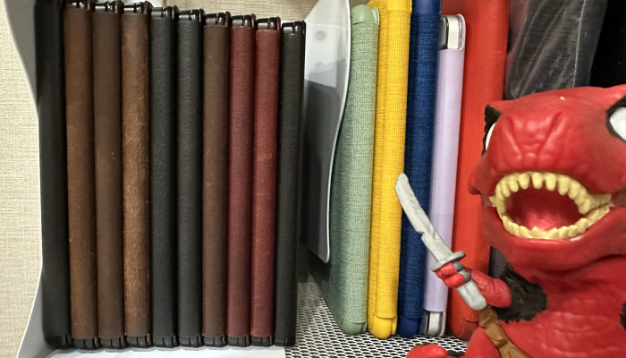

mindsoap.net 2025-08-20

최근 칼라버전이라거나, 화면이 큰 버전이라거나, 펜이딸린 모델들을 써봤는데,
책읽는데는 옛날모델이 좋더라-와 옛날 기기에 향수가있어서 그런지.
그리고 최근 기계들은 수리불가능한 배터리닳으면 버려야하는, 특히 킨들 7인치 오아시스들같은 녀석들은
수리불가능이다. 스크라이브도 샀었는데 이것도 배터리 닳으면 끝인가 싶어서 정이 떨어져서 다 정리해버렸는데
은근 구하려고 해도 눈에 안띄던 오아시스 1을 최근 중고시장에서 우르르 찾아내는바람에 정신차려보니 10개네 (어?)
ㅋㅋㅋㅋㅋ 미친
중고장터 그만봐야되는데. 가끔 누가 상태좋은데 아까우니 장터에버림 이런 마인드의 매물을 보면 나도 모르게 줏어버려서
뭔가 페이퍼화이트 1이라거나, 10이라거나 그리고 킨들2같은거 줏어버렸느데 모르겠다;
오아1은 생각보다 아직 멀쩡한녀석들이거나, 본체의 배터리가 죽어서 갈아주거나 하는 정도니까
아직은 더 살아남아있을듯
페화1의 경우는, 미품인데도 그 무광코팅?특유의 끈적거림이 생겼더라
그래도 아직까지 케이스와 배터리의 멀쩡함에 감탄함
생각보다 책도 읽을만했다 코리더도 잘돌아감